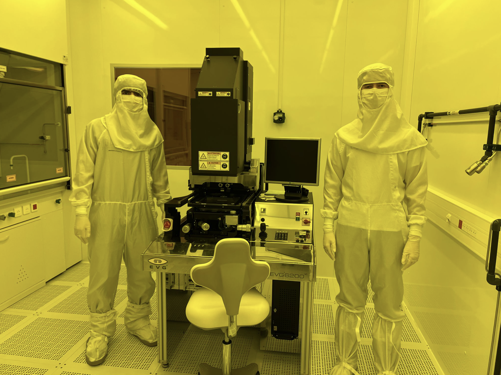
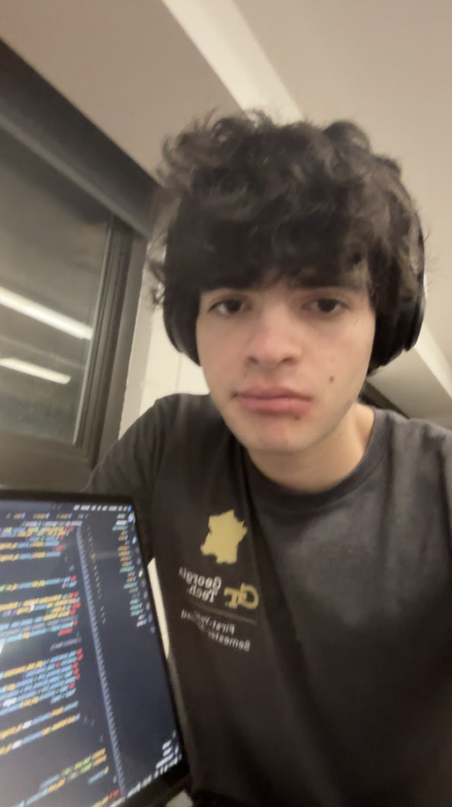

About Me

Overview
As I said before, I'm an electrical engineering student undergrad at Georgia Tech. I'm also considering adding a Math minor as well.
My interests lie in the intersections between power electronics and programming language design; basically, connecting high-level programming
to power electronics hardware.
Recently, I had the opportunity to study abroad at Georgia Tech Europe in Metz, France, where I assisted a postdoc student in both the optical lab and an ISO-5 cleanroom.
I contributed to experiments involving electroluminescence in BN/AlGaN diodes and gained experience working with optical measurement setups, data analysis, and cleanroom processes.
This experience absolutely reinforced my desire to pursue a research-based pathway through the rest of my undergraduate years and beyond.
Outside of research, I like building things from scratch. I've worked on projects like creating a synthesizer in C and developing my own programming language in Rust.
These projects have helped me get comfortable with low-level problem solving and thinking carefully about system design and usability.

My Story
Ever since my dad showed me his gaming setup when I was around 5 or 6 years old, I was hooked on computers. My whole life from that point
on revolved around computers; I loved investigating pieces of software and hardware, and this eventually grew into a deep interest with coding
as I entered high school. I went on to join countless programming-related clubs like robotics, AI, CS, etc., and I even started my own club
which served as our school's Website Development Club. My culminating project was my programming language, which you can see in my "Projects" page.
But, I realized that I was also extremely interested in learning more about how the power grid worked at the same time. It's almost as if there's
an invisible force maintaining the lives of all eight billion people around the world, and I just had to learn more about it. That brings me to where I'm at today;
an electrical engineering major with a strong interest in the intersection between hardware and software.
Looking deeper into the future, I would like to delve further into research and join more ECE-related technical clubs, especially Silicon Jackets.
Eventually, I hope to apply my research skills to use in developing technology for a personal startup (but this is far into the future!).
Other Things
Apart from coding and electrical engineering, I have numerous hobbies as well. I love anything outdoors, like biking, hiking, backpacking, camping, and mountaineering. I also have a passion for tutoring and have worked as a tutor at various institutions for many years. Besides those things, I like reading, lifting, going out with friends, and watching Dexter. If you have any questions or want to learn more about anything I have on this portfolio website, feel free to access my contact information in the "Contact Me" section! Also, you can see pictures of the things I describe here in "Gallery" section.